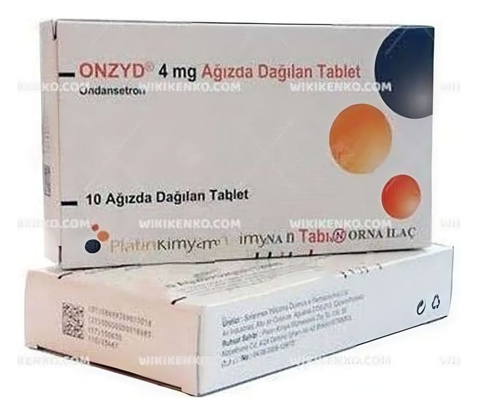

Onzyd 4 mg Ağızda Dağılan 10 Tablet

Ne için kullanılır
KT · Bölüm 1ONZYD ondansetron etkin maddesini içerir. Ağızda dağılan beyaz renkli, yuvarlak, düz ve kenarları eğimli tabletler halindedir. Karton kutuda, çift kat alüminyum blister içinde 10 adet ağızda dağılan tablet halinde bulunmaktadır. ONZYD anti-emetik olarak adlandırılan bir ilaç grubuna dahildir. Bazı ilaç tedavileri (örn; kanser ilaçları) kendinizi hasta hissetmenize ve kusmanıza neden olabilir. ONZYD kendinizi hasta hissetmenizi veya kusmanızı önler. ONZYD, ilaç ve ışınla yapılan kanser tedavilerine bağlı bulantı ve kusmayı önlemek için kullanılır. Ayrıca, ameliyatlardan sonra ortaya çıkan bulantı ve kusmaları önlemek için de kullanılır. Doktorunuz size ve sizin koşullarınıza uygun olarak bu ilacı seçmiştir. ONZYD, tedavi sonrası kendinizi hasta hissetmemeniz ve kusmanızı önlemek için verilmiştir.